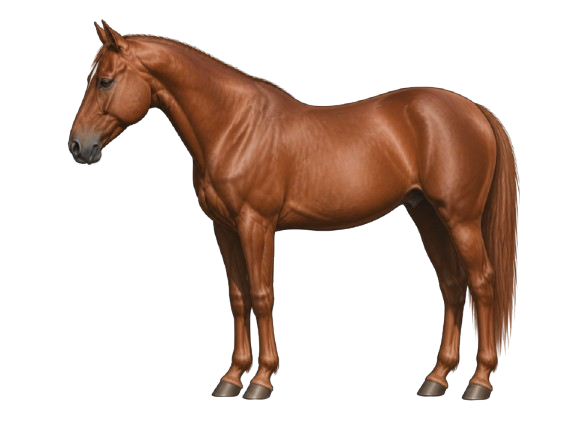

Reddish-BrownChestnut
Chestnut horses have a warm reddish-brown coat. Their mane and tail are usually the same color as the body or lighter shades of red. Chestnut horses do not have any black on their bodies, legs, manes, or tails (no black points).
Some chestnut horses may have a lighter, cream-colored mane and tail called flaxen. Even with flaxen coloring, the coat is still considered chestnut because the body stays in the red color range.